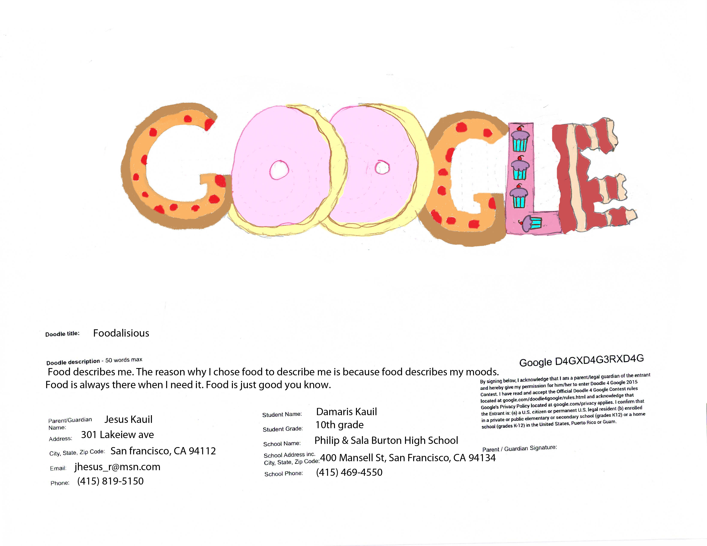
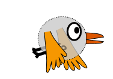
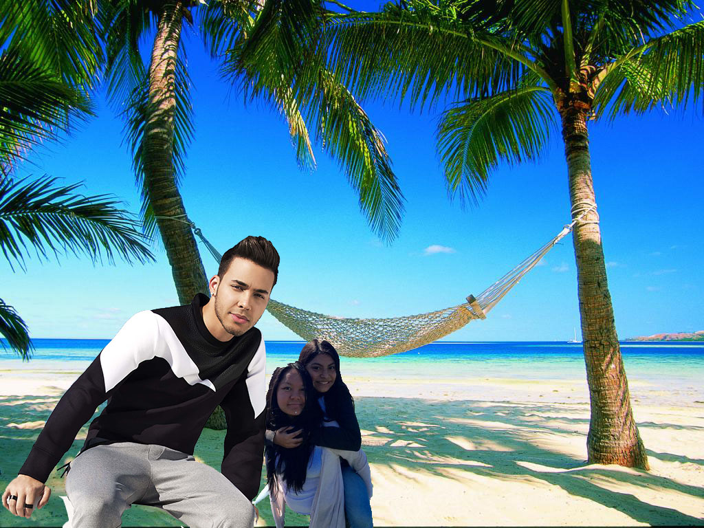
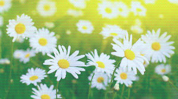

Gallery
Image

In this image you can see the eagle"s wing is somewhat blurred tomake it look like it flapped it's wing.
As you can see this is an image for the Google contest,DoodleForGoogle.
 In this image you can se the scan lines that I used in photoshop.
In this image you can se the scan lines that I used in photoshop.
In this image you can se the scan lines that I used in photoshop.This gif you can see the bird flying. The tools I used to create this gif are the slice tool and the amination thing.

